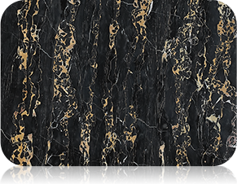
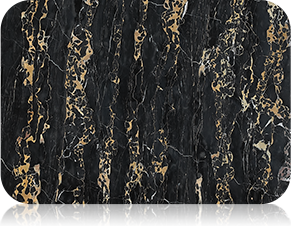

导语
近年来，高端装修出现奇怪现象：高端酒店、高档会所、高端别墅等高级场所,不用大理石,就用大理石瓷砖？天然大理石，浑然天成，大气磅礴。其绝佳的装饰效果毋庸置疑，一直备受高端场所青睐。而后起之秀，大理石瓷砖则后来居上。以其源于大理石而优于大理石的装饰性能和物理性能，给众多高端场所提供了更为丰富的选择，成为高端选材一大热门。
导语
近年来，高端装修出现奇怪现象：高端酒店、高档会所、高端别墅等高级场所,不用大理石,就用大理石瓷砖？天然大理石，浑然天成，大气磅礴。其绝佳的装饰效果毋庸置疑，一直备受高端场所青睐。而后起之秀，大理石瓷砖则后来居上。以其源于大理石而优于大理石的装饰性能和物理性能，给众多高端场所提供了更为丰富的选择，成为高端选材一大热门。

“大理石瓷砖在真实还原天然大理石纹理的基础上增加了更多可人为控制的可能，让大理石瓷砖在拥有逼真仿石效果的同时能更多地满足个性化的需求，在轻松驾驭西式风格的同时，也能完美体现中式风格的韵味。”
“天然大理石源自于大自然的鬼斧神工，花色恢弘大气、自然美好，从古至今造就了诸多海内外知名建筑，纵观这些建筑，或复古、或欧式、或现代，大都以西方风格为主。”


赵小姐
赵小姐装修时也在天然大理石和大理石瓷砖之间纠结了很长一段时间，最终还是选择了大理石瓷砖，时间过去了8年，家中的大理石瓷砖依旧完好无损。
郑先生
郑先生家中大面积使用了天然大理石，第三年阳台大理石地面出现了大片水渍，家中不同位置受到了不同程度的影响。现在孙先生还在为：是继续饱受天然大理石带来的不便，大动工拆掉重装而烦恼着。


 

国家将天然石材和瓷砖按照放射性水平分为A、B、C三类，A类产品可以使用在任何场合，B类产品可以使用在除居室内饰面以外的任何场合，C类产品仅可使用在建筑物外饰面。而所有的天然石材一定会带有一定辐射，且市场上大部分的石材产品没有强制进行放射性检验，较难鉴定；但瓷砖产品都必须经过严格检测且明确分类，消费者能够轻松辨别。大理石瓷砖健康、环保、无辐射，使用安全。
大理石瓷砖是一种革命性的装饰材料，在纹理上完全达到了天然大理石的逼真效果，装饰效果上甚至优于天然石材，自然、大气、奢华，把瓷砖由死变活。在性能上延续了瓷砖防水、防滑、易清洁、使用安全的突出性能，大理石瓷砖的出现是建筑陶瓷行业一次质的飞跃。
家里选用大理石瓷砖显得特别高端大气上档次，家里来客人都说特别好看，全家人都喜欢得不得了；而且不用担心辐射的问题，用得也放心；还不用刻意保养，弄脏了随便拖一拖照样干净，特别省心，以后朋友装修我一定要推荐他们用大理石瓷砖。